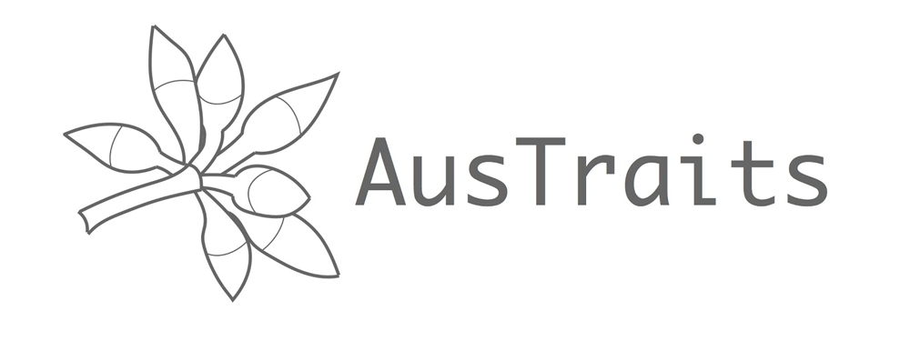

AusTraits is a transformative database, containing measurements on the traits of Australia’s plant species, standardised from hundreds of disconnected primary sources. So far, data have been assembled > 250 distinct sources, describing more than 400 plant traits and over 25k taxa. The dataset and approach is documented in detail in the following publication
Falster D, Gallagher R, Wenk, E et al. (2021) AusTraits, a curated plant trait database for the Australian flora. Scientific Data 8: 254. DOI: 10.1038/s41597-021-01006-6
Those interested in simply using data from AusTraits, should visit download the compiled resource from the versioned releases archived on Zenodo at doi: 10.5281/zenodo.3568417.
There you will also find detailed information regarding appropriate use of AusTraits. Further information about the AusTraits project is available at the project website austraits.org.
Rebuilding AusTraits from source
This repository (austraits.build) contains the raw data and code used to compile AusTraits from diverse, original sources.
To handle the harmonising of diverse data sources, we use a reproducible workflow to implement the various changes required for each source to reformat it suitable for incorporation in AusTraits. Such changes include restructuring datasets, renaming variables, changing variable units, changing taxon names. For the sake of transparency and continuing development, the entire workflow is made available here.
AusTraits is continually evolving, as new datasets are contributed. As such, there is no single canonical version. We are continually making new versions available. Overtime, we expect that different versions will be released and used in different analyses.
Those interested in building AusTraits from source or contributing to AusTraits should see further information at this http://traitecoevo.github.io/austraits.build/articles/austraits.build.html
Acknowledgements
Funding: This work was supported via the following funding sources: fellowship grants from Australian Research Council to Falster (FT160100113), Gallagher (DE170100208) and Wright (FT100100910), a grant from Macquarie University to Gallagher, and grants from theAustralian Research Data Commons (ARDC), via their “Transformation data collections” doi: 10.47486/TD044 and “Data Partnerships” doi: 10.47486/DP720 programs. The ARDC is enabled by NCRIS.
Recognition: Many people have contributed to AusTraits. A list of contributors is provdied on the on Zenodo at doi: 10.5281/zenodo.3568417.
Resuse: At this stage, only the compiled xAusTraits dataset is available for reuse, via Zenodo. The raw data sources provided in this repository are not available for reuse in their current form, without further discussion from data contributors.